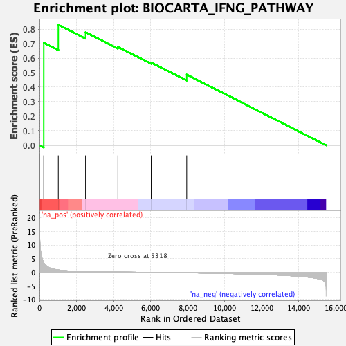

| | | Dataset | DE_genes |
| Phenotype | NoPhenotypeAvailable |
| Upregulated in class | na_pos |
| GeneSet | BIOCARTA_IFNG_PATHWAY |
| Enrichment Score (ES) | 0.82932544 |
| Normalized Enrichment Score (NES) | 1.5460469 |
| Nominal p-value | 0.06501548 |
| FDR q-value | 0.35762545 |
| FWER p-Value | 0.994 |
Table: GSEA Results Summary

Fig 1: Enrichment plot: BIOCARTA_IFNG_PATHWAY
Profile of the Running ES Score & Positions of GeneSet Members on the Rank Ordered List
| PROBE | GENE SYMBOL | GENE_TITLE | RANK IN GENE LIST | RANK METRIC SCORE | RUNNING ES | CORE ENRICHMENT | | 1 | STAT1 | | | 233 | 3.445 | 0.7058 | Yes |
| 2 | JAK2 | | | 1017 | 0.832 | 0.8293 | Yes |
| 3 | IFNGR2 | | | 2488 | 0.211 | 0.7783 | No |
| 4 | JAK1 | | | 4234 | 0.057 | 0.6774 | No |
| 5 | IFNG | | | 6033 | -0.041 | 0.5697 | No |
| 6 | IFNGR1 | | | 7948 | -0.193 | 0.4864 | No |
Table: GSEA details [plain text format]
Fig 2: BIOCARTA_IFNG_PATHWAY: Random ES distribution
Gene set null distribution of ES for BIOCARTA_IFNG_PATHWAY